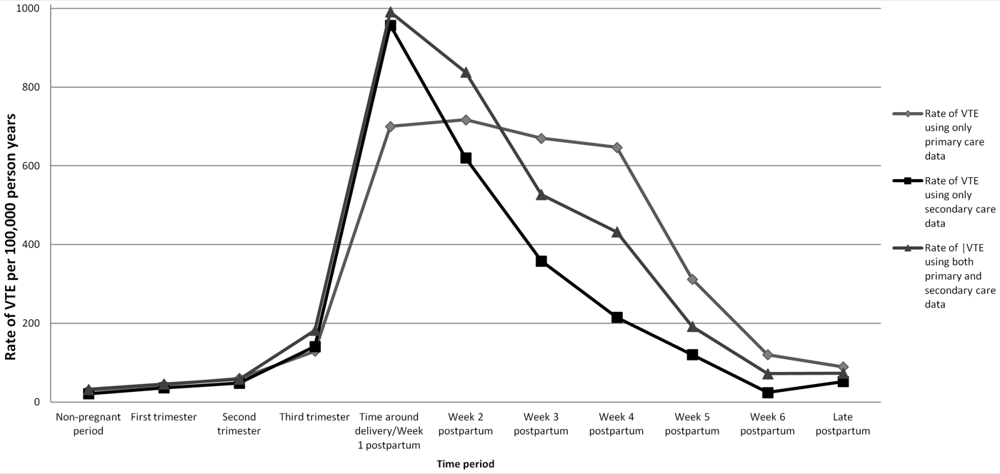

Página 1 · TEV no ciclo gravídico-puerperal
Depois que o bebê nasceu, o perigo começa
Depois do parto, quando é o pico do risco absoluto de tromboembolismo venoso?
Guarde essa pergunta sem responder. Ela reorganiza toda a intuição do tema — a maioria aposta que "o risco é na gestação" — e a resposta só volta no fecho do eixo, quando a questão da UEL for dissecada alternativa por alternativa. Por ora, deixe a pista se acumular no texto.
O TEV atravessa todo o ciclo — e é 5 a 20× o da população geral
A paciente da gestação e do puerpério não é a mesma paciente da clínica geral. As repercussões fisiológicas da gestação mudam o comportamento das doenças — e é exatamente essa diferença que a banca de GO cobra. No tromboembolismo venoso isso aparece de forma brutal: o risco de um evento trombótico dentro do ciclo gravídico-puerperal é 5 a 20 vezes maior que o da população geral. Episódios trombóticos acontecem tanto durante a gestação quanto no puerpério — não é um fenômeno de um momento só.
Meio a meio em número absoluto, mas o pico é por unidade de tempo
Aqui mora a primeira sutileza. Se você contar os casos em números absolutos, a distribuição é aproximadamente meio a meio: metade dos eventos ocorre na gestação, metade no puerpério. Parece que dá no mesmo. Não dá. A gestação dura cerca de 40 semanas; o puerpério dura 6 semanas. Quando você divide o mesmo número de eventos por janelas de tempo tão diferentes, o risco por unidade de tempo dispara no puerpério. É lá, num intervalo muito mais curto, que a paciente mais faz o evento. Metade dos casos espremida em seis semanas pesa muito mais do que a outra metade diluída em quarenta.
- 5–20×risco vs. população geral
- ~50 / 50gestação × puerpério (absoluto)
- 40 × 6semanas: a densidade que inverte tudo
Dentro da gestação, os três trimestres se distribuem igual
Uma intuição comum é imaginar que o terceiro trimestre, com o útero maior e mais estase, concentraria os eventos. Não é o que se observa: dentro da gestação, o risco se distribui de forma semelhante entre os três trimestres — o primeiro e o segundo carregam risco comparável ao terceiro. A gestação inteira é um terreno pró-trombótico, não só a reta final.
TEV como causa de morte materna, sobretudo nos países desenvolvidos
O tromboembolismo venoso é uma importante causa de morte materna, e ganha destaque particular nos países desenvolvidos. Para entender por quê, é preciso olhar quem mais mata mãe hoje.
A pegadinha: "acabou o parto, acabou o risco" é falso
A frase "depois que o bebê nasceu, acabou a questão" é falsa, e é uma das armadilhas mais cobradas do tema. O puerpério é justamente o período de maior risco de a paciente fazer um evento trombótico. Retirar a vigilância no pós-parto é o erro clínico e o erro de prova.
Por que o TEV emerge no mundo desenvolvido — a cadeia causal dos Big-3
As três causas que mais matam mãe atualmente — o "Big-3" da mortalidade materna — são hemorragia, hipertensão e infecção. Hemorragia e infecção são causas potencialmente evitáveis; a hipertensão, com manejo adequado, melhora muito o cenário. Agora acompanhe a cadeia: nos países em desenvolvimento, essas causas evitáveis ainda dominam a mortalidade materna — a mulher morre do que se poderia prevenir. Nos países desenvolvidos, hemorragia, hipertensão e infecção já foram amplamente controladas; quando as causas previsíveis recuam, sobram as menos previsíveis, e o TEV sobe em importância relativa. Não é que a gestante desenvolvida trombose mais — é que ela morre menos das outras coisas, então a trombose aparece no topo. Parte das pacientes com TEV tem fatores de risco identificáveis (dá para desconfiar antecipadamente), mas o evento também pode ser imprevisível — e é essa imprevisibilidade que o torna difícil de zerar.
- TEV6 semanas · pico precoce
- Peri-partoreintrodução 8–12h
- Baby blues≤ 2 semanas
- Depressão≥ 2 semanas
- Psicose1ª semana / 1º mês

A curva de incidência confirma o conceito-choque: sobe discretamente na gestação, atinge o pico em torno do parto / 1ª semana e desce ao longo das seis semanas do puerpério — o risco não é uniforme, ele se concentra no pós-parto imediato.
Abdul Sultan A. et al. The Incidence of First Venous Thromboembolism in and around Pregnancy, PLOS ONE, 2013, Fig. 1. Licença CC BY · fonte
Quiz — fixação
Sobre a distribuição temporal do risco de TEV no ciclo gravídico-puerperal, assinale a correta:
- B — a virada. Metade dos eventos ocorre em cada fase, mas o puerpério comprime sua metade em 6 semanas contra as 40 da gestação — então o risco por unidade de tempo dispara no pós-parto.
- A. Confunde "mais casos" com "mais tempo": diluir o mesmo número em mais tempo baixa o risco instantâneo — quem cai aqui inverte a lógica de densidade temporal.
- C. É a intuição do "útero maior no 3º tri", mas os três trimestres se distribuem de forma semelhante — a banca pune quem assume gradiente trimestral.
- D. É a pegadinha-mãe da página ("acabou o parto, acabou o risco"): é justamente no puerpério precoce que o risco é máximo.
Por que o TEV desponta como causa de morte materna sobretudo nos países desenvolvidos?
- B — a virada. É uma cadeia causal: controlados os "Big-3" evitáveis, sobram as causas imprevisíveis como o TEV — que sobe em importância relativa, não absoluta.
- A. Inventa um mecanismo biológico onde a explicação é epidemiológica — não há maior trombofilia populacional, há menor mortalidade concorrente.
- C. Extrapola: os que mais matam globalmente ainda são hemorragia, hipertensão e infecção; o TEV é importante, não o primeiro.
- D. Absurdo clínico — o TEV existe em todo lugar; nos países em desenvolvimento ele apenas fica ofuscado pelas causas evitáveis que ainda dominam.
Se a puérpera é quem mais trombosa, falta entender o motor: o que a gestação faz com o sangue, o vaso e o fluxo que a torna a paciente perfeita para trombosar.